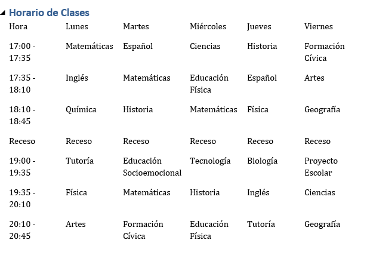

Horario Semanal
| Hora | Lunes | Martes | Miércoles | Jueves | Viernes |
|---|---|---|---|---|---|
| 17:00 - 17:35 | Matemáticas | Español | Ciencias | Historia | Formación Cívica |
| 17:35 - 18:10 | Inglés | Matemáticas | Educación Física | Español | Artes |
| 18:10 - 18:45 | Química | Historia | Matemáticas | Física | Geografía |
| Receso | |||||
| 19:00 - 19:35 | Tutoría | Educación Socioemocional | Tecnología | Biología | Proyecto Escolar |
| 19:35 - 20:10 | Física | Matemáticas | Historia | Inglés | Ciencias |
| 20:10 - 20:45 | Artes | Formación Cívica | Educación Física | Tutoría | Geografía |
Captura del Horario de Clases
A continuación, se muestra una captura del horario de clases desde el que se tomó la información:
